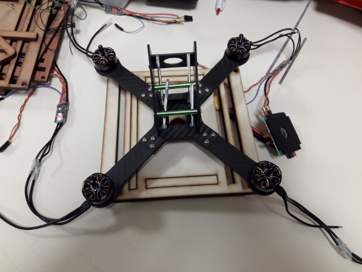
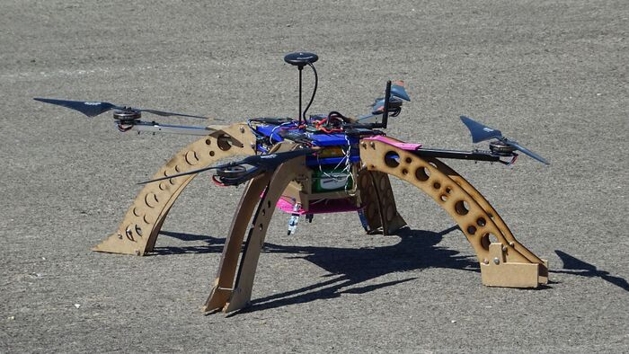
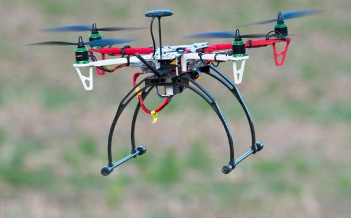
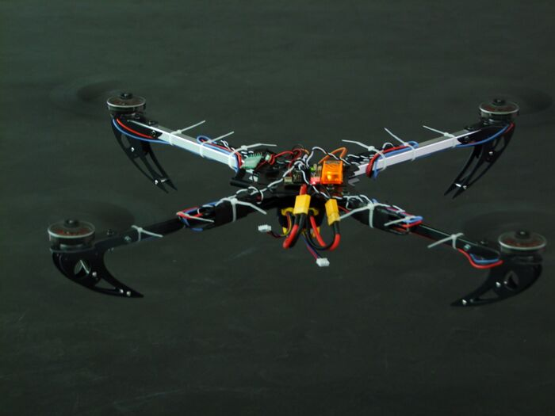
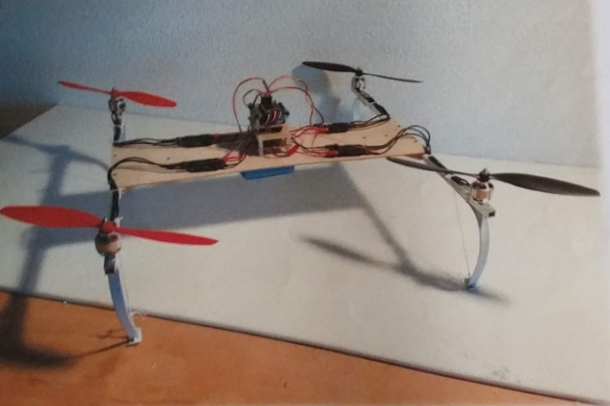
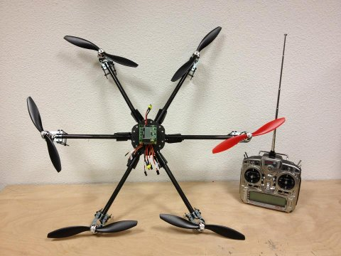

2021 — 2022
Tax'eirb
Tax'eirb reprend le thème Taxi Driver 2024 abandonné lors de l'année COVID. Projet mené notamment par Arthur Toder et Nicolas Gonnet pour le C'Space 2022.
Du premier prototype DroneLoad aux drones FPV freestyle — l'évolution du pôle drone d'EIRSPACE, année après année.
Le pôle drone est né en 2011 de la récupération des drones de l'ancienne association de MATMECA. Depuis, chaque promotion a construit le sien. À partir de 2018, EirSpace participe au concours DroneLoad, co-organisé par Planète Sciences et Safran, où des drones autonomes s'affrontent sur des missions de reconnaissance et de transport au sol.
Tax'eirb reprend le thème Taxi Driver 2024 abandonné lors de l'année COVID. Projet mené notamment par Arthur Toder et Nicolas Gonnet pour le C'Space 2022.
Prévu pour le concours C'Space Taxi Driver 2024 : identifier des panneaux et amener des cubes colorés en passant par des fenêtres. Équipe de sept personnes avec des profils variés (conception électronique, VHDL, code, assemblage). Le confinement de mars 2020 a mis fin au projet avant qu'il puisse être terminé et participer au concours.

Drone de sauvetage conçu par Zoheb (chef de projet), Julien, Agnia, Claire, Lucas, Amaury, Mélanie et Ali. Mission : transporter des cubes de 125 cm³ à l'aide d'une pince, jusqu'à trois personnes en passant par des fenêtres. C'est le thème du C'Space Rescue Mission 2019. Pamela n'a pas participé au concours mais a été réparée l'année suivante pour obtenir un drone fonctionnel.

Ikran marque la première participation d'EirSpace à DroneLoad, la toute première édition du concours. Nommé d'après les créatures volantes d'Avatar. Quadricoptère en H avec châssis imprimé en 3D (PLA), contrôleur de vol Pixhawk. Le concours comporte deux épreuves : reconnaissance de balises infrarouges et récupération d'échantillons (eau, gravier, sable) avec une vis d'Archimède. Ikran est le seul drone du concours à proposer un pilotage automatique complet. Batterie 4S 10 000 mAh, quatre moteurs 360 kV. Le jour J, des rafales de vent font perdre la liaison sol pendant la première épreuve. Ikran passe en failsafe, est balayé à l'atterrissage et s'écrase. Trop endommagé pour la deuxième épreuve. EirSpace termine 3ème.

Quadricoptère en X conçu par Simon Lambert, seul membre de l'équipe cette année. Drone polyvalent avec nacelle stabilisée pour la caméra. Module GPS, mode Return To Home automatique : si le signal coupe, Hunter revient à son point de décollage tout seul. Capable de suivre un plan de vol prédéfini. Télémétrie temps réel depuis un ordinateur au sol. La carte de vol puissante lui permettait d'embarquer des expériences ou des bras articulés pour de futurs projets.

Troisième drone du club, conçu par quatre élèves de première année en Télécom : Imane Benelmamoun, Rania El Horma, Kévin Kheng et Titouan Petitpied. Quadricoptère en H, 1,4 kg. L'objectif est de réaliser un vol stable avec transport de caméra, puis de reconstruire en 3D les images prises depuis les airs. Moteurs de 360 kV. Structure plastique et tubes aluminium. Retour télémétrique par module XBee.

Second drone du club, construit par Gabriel Vermeulen, Adrien Albouy, Xavier Lamboley, Théo Martin, Damien Sureau et Laurent Barraud. Configuration quadricoptère en H, en bois et tubes aluminium. Hector est capable de naviguer de façon autonome grâce à des capteurs ultrasons, de s'adapter à son environnement et de renvoyer les données de vol en temps réel via un module XBee.

Premier drone du club, conçu par six élèves de première année sous la direction d'Antoine Renaud. Horus est un hexacoptère dont la mission est de faire des prises de vue aériennes avec une caméra montée sur base gyro-stabilisée. Son nom vient du dieu faucon égyptien, celui qui est au-dessus. Deux opérateurs sont nécessaires : un pilote et un manipulateur de caméra. La transmission vidéo se fait en temps réel. Autonomie de 30 min sur quatre batteries de 2 200 mAh. Structure en fibre de carbone, acier et plastique.